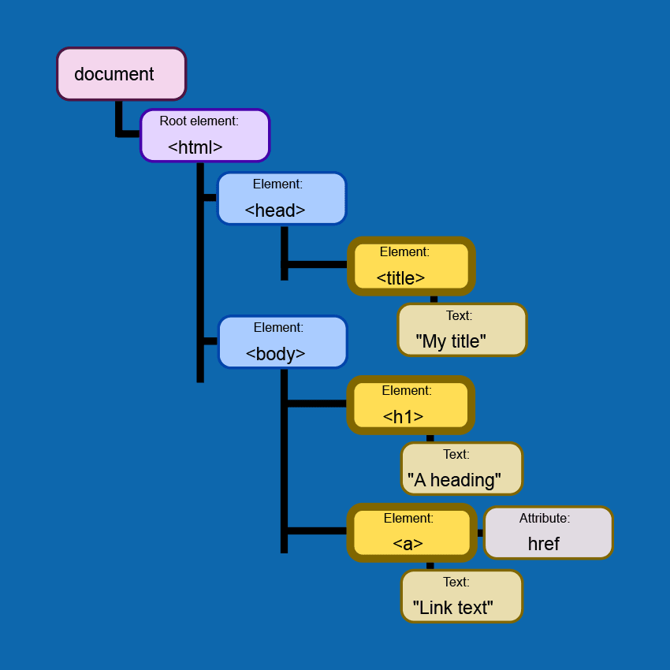

JavaScript DOM
An analogy to describe JavaScript and its relationship to HTML and CSS
HTML is like a piece of paper, CSS is an artist tool kit with all the markers, highlighters, to style the paper and make it looks good, JavaScript is magic spell that turn the things on the paper alive.
What is control flow and loops in JavaScript?
Control flow is like wash dishes. You grab a dirty dish, turn on the tap, take a dish brush, put the dirty dish you are holding under the tap with the running water, use the brush to brush the dirty dish over and over again util it’s clean. The whole process works like a control flow, it is like instructions you follow to perform certain tasks. We use control flow to talk to the computers.
The loops is the actions you do it repeatedly until meet a certain condition to tell it to stop. For example, when you brush the dish, you can say, brush it 20 times. So you do it 20 times and then you stop.
What the DOM is and an example of how you might interact with it?
DOM is like the tree and the HTML and CSS elements are like branches from the tree. It represents the web page using a series of objects. The main object is the document object, which in turn houses other objects which also house their own objects, and so on.
You can access the contents like headings, tables of an HTML document through the DOM using dot notation.After the document, you place a dot followed by a property or method. The most common one is document.getElementById, so you can play with the id element from HTML. Other popular methods to manipulate DOM are `document.querySelectorAll(),` `document.createElement()`,`document.getElementByTagname`(),`document.querySelector`()etc.
The difference between accessing data from arrays and objects
We use arrays to create and store a list of things in a single variable. We use index to access the data from arrays. Say let shoppingList=[’banana’, ‘milk’, ‘bread’], in order to access the data ‘banana’, we use shoppingList[0], as the index starts from zero in an array.
Objects are used to represent a “thing” in your code. The thing can be anything. An object has a curly bracket that contains a key and a value that assigned to the key. It looks like this let persona {name : ‘Ling’}, to access the value of the name property, we can use dot notation person.name to access the data. we can also use the bracket notation such as person[’name’] to access the name of the person .
What functions are and why they are helpful?
Functions are a bunch of code putting together that you can use them over and over again. They are useful because instead of writing multiple code every time, you use the function once to do the job.